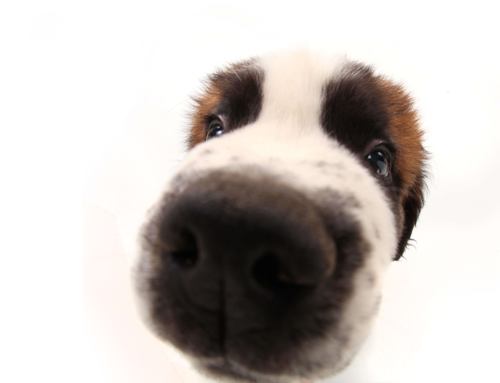

Publicado el 12 de Enero del 2021
El mundo a través de la nariz
Como es sabido, los perros tienen una destacada capacidad olfativa y se valen de la misma para reconocer qué es y dónde está todo aquello que encuentran en su entorno, así como para detectar objetos, enfermedades y personas. Los perros cuentan con millones de receptores olfativos (el ser humano tiene sólo 5 mil), y es por eso que al salir suelen reaccionar con ansiedad y exaltación: reciben muchos estímulos.